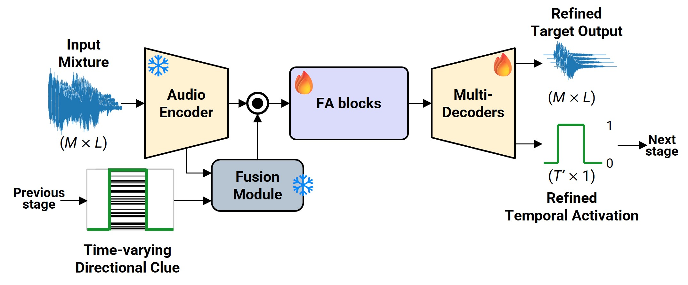
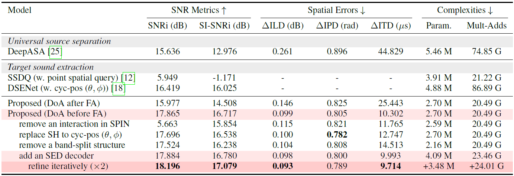
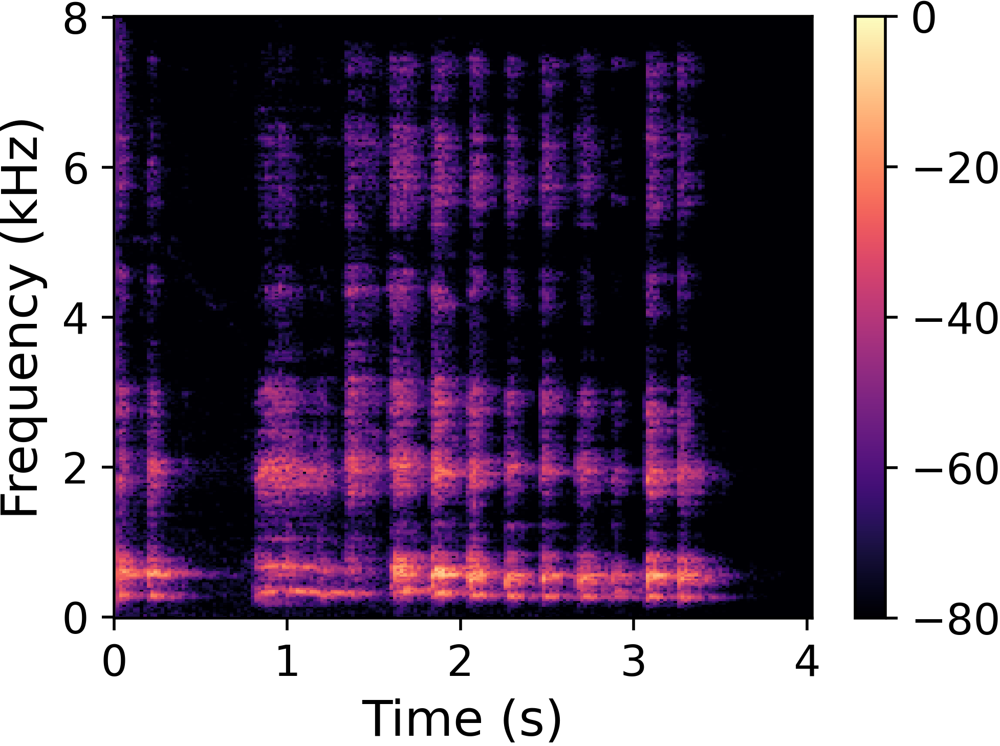

SoundCompass: Navigating Target Sound Extraction with Effective Directional Clue Integration in Complex Acoustic Scenes
Dayun Choi and Jung-Woo Choi
School of Electrical Engineering, KAIST, Daejeon, Republic of Korea
{cdy3773, jwoo}@kaist.ac.kr
Abstract
Recent advances in target sound extraction (TSE) utilize directional clues derived from direction of arrival (DoA), which represent an inherent spatial property of sound available in any acoustic scene.
However, previous DoA-based methods rely on hand-crafted features or discrete encodings, which lose fine-grained spatial information and limit adaptability.
We propose SoundCompass, an effective directional clue integration framework centered on a Spectral Pairwise INteraction (SPIN) module that captures cross-channel spatial correlations in the complex spectrogram domain to preserve full spatial information in multichannel signals.
The input feature expressed in terms of spatial correlations is fused with a DoA clue represented as spherical harmonics (SH) encoding.
The fusion is carried out across overlapping frequency subbands, inheriting the benefits reported in the previous band-split architectures.
We also incorporate the iterative refinement strategy, chain-of-inference (CoI), in the TSE framework, which recursively fuses DoA with sound event activation estimated from the previous inference stage.
Experiments demonstrate that SoundCompass, combining SPIN, SH embedding, and CoI, robustly extracts target sources across diverse signal classes and spatial configurations.
Model Architecture
Fig. 1. (a) Overall architecture of SoundCompass for DoA-based target sound extraction and (b) details of a fusion module including a Spectral Pairwise INteraction (SPIN) module and integrating directional clue by feature-wise linear modulation (FiLM) for $K$ subbands.

Fig. 2. Details of iterative refinement.
Performance Comparisons
Table. 1. Performance comparisons across models and structural variations of the proposed methods.

t-SNE Trajectories
Fig. 3. The t-SNE trajectories of the FiLM scale ($\gamma$) parameters across three subbands, with respect to azimuth (top, for 5 fixed elevations) and elevation (bottom, for 5 fixed azimuths).
Three Audio Samples
Click a toggle to listen to samples. All spectograms are the first channel of microphone array.
Sample #1
Extraction of each audio from the mixture including 4 sources
SI-SNRi Contour Maps
Input Mixture and Sum of Direct/Reverb Components from Direct/Reverb Audio Decoder
Input Mixture
Source 1 ($\theta=$116°, $\phi=$130°) Ground truth
Source 2 ($\theta=$89°, $\phi=$77°) Ground truth
Source 3 ($\theta=$63°, $\phi=$60°) Ground truth
Source 4 ($\theta=$77°, $\phi=$273°) Ground truth
Estimation
Estimation
Estimation

Estimation
Direct Components of Above Samples from Direct Audio Decoder
Ground truth (direct)
Ground truth (direct)
Ground truth (direct)
Ground truth (direct)
Estimation (direct)
Estimation (direct)
Estimation (direct)
Estimation (direct)
Sample #2
Extraction of each audio from the mixture including 5 sources
SI-SNRi Contour Maps
Input Mixture and Sum of Direct/Reverb Components from Direct/Reverb Audio Decoder
Input Mixture
Source 1 ($\theta=$105°, $\phi=$334°) Ground truth
Source 2 ($\theta=$55°, $\phi=$41°) Ground truth
Source 3 ($\theta=$85°, $\phi=$330°) Ground truth
Source 4 ($\theta=$72°, $\phi=$155°) Ground truth
Source 4 ($\theta=$96°, $\phi=$197°) Ground truth
Estimation
Estimation
Estimation
Estimation
Estimation
Direct Components of Above Samples from Direct Audio Decoder
Ground truth (direct)
Ground truth (direct)
Ground truth (direct)
Ground truth (direct)
Ground truth (direct)
Estimation (direct)
Estimation (direct)
Estimation (direct)
Estimation (direct)
Estimation (direct)
Sample #3
Extraction of each audio from the mixture including 5 sources
SI-SNRi Contour Maps
Input Mixture and Sum of Direct/Reverb Components from Direct/Reverb Audio Decoder
Input Mixture
Source 1 ($\theta=$80°, $\phi=$315°) Ground truth
Source 2 ($\theta=$75°, $\phi=$47°) Ground truth
Source 3 ($\theta=$100°, $\phi=$131°) Ground truth
Source 4 ($\theta=$130°, $\phi=$248°) Ground truth
Source 4 ($\theta=$75°, $\phi=$118°) Ground truth
Estimation
Estimation
Estimation
Estimation
Estimation
Direct Components of Above Samples from Direct Audio Decoder